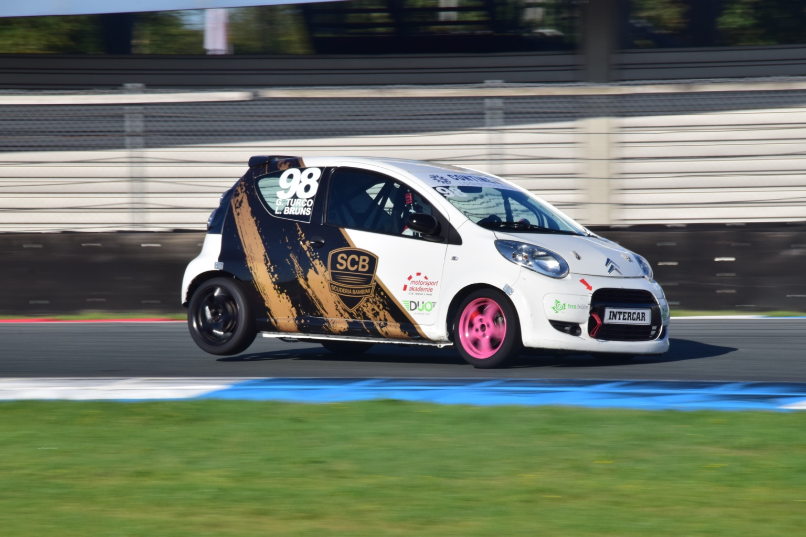
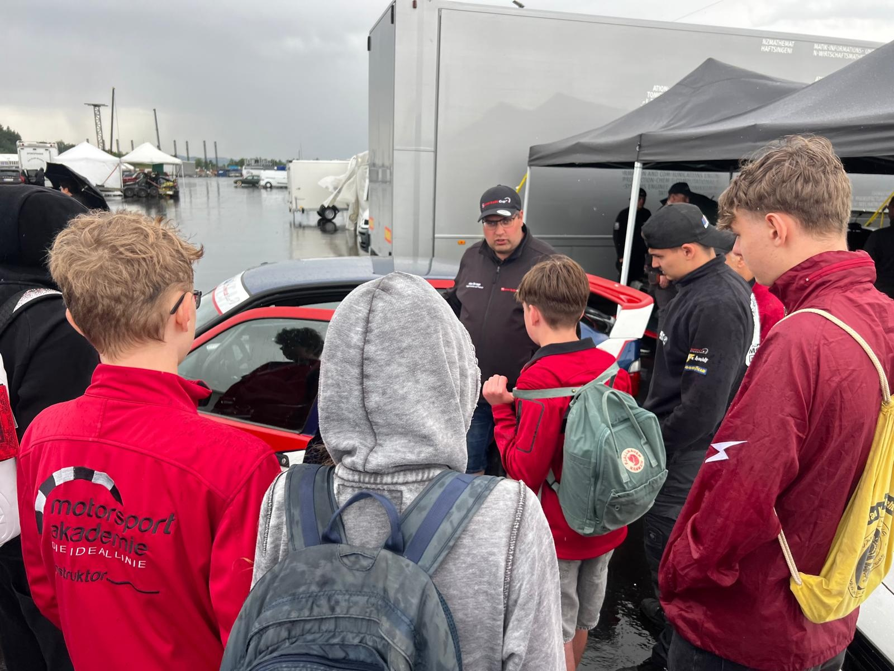
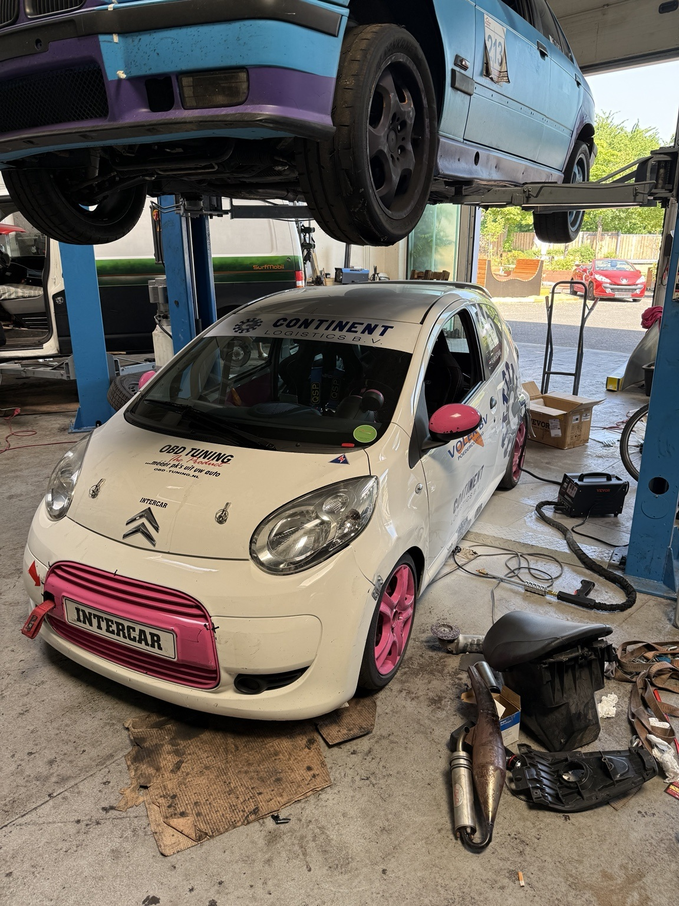
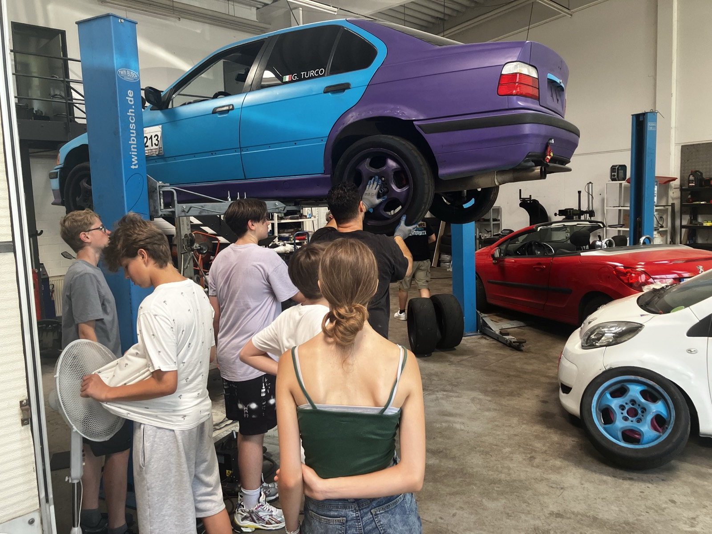
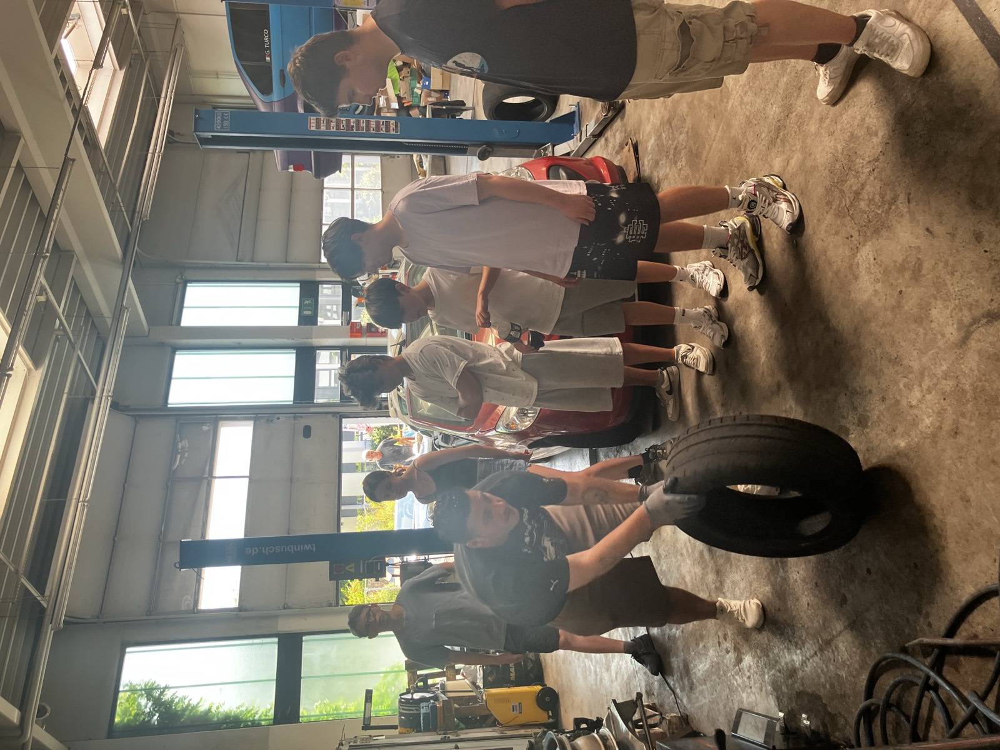
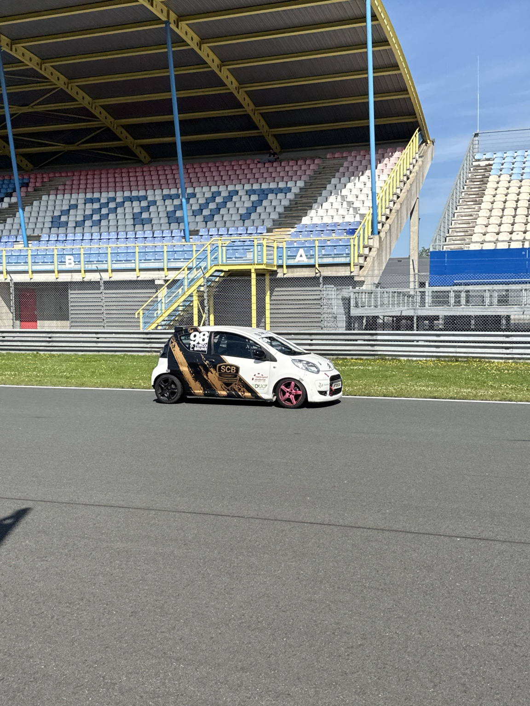
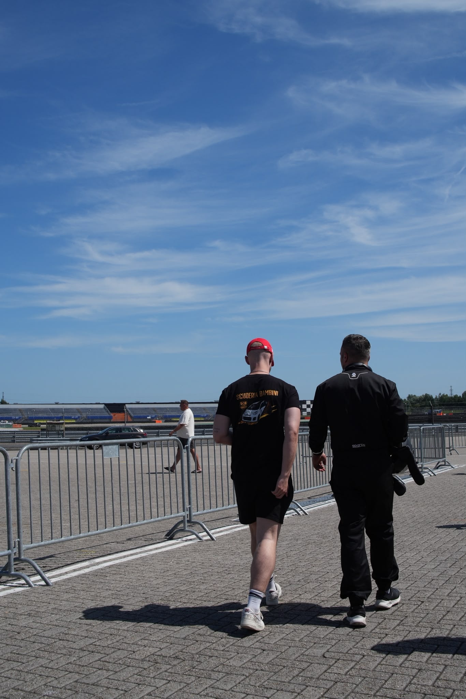
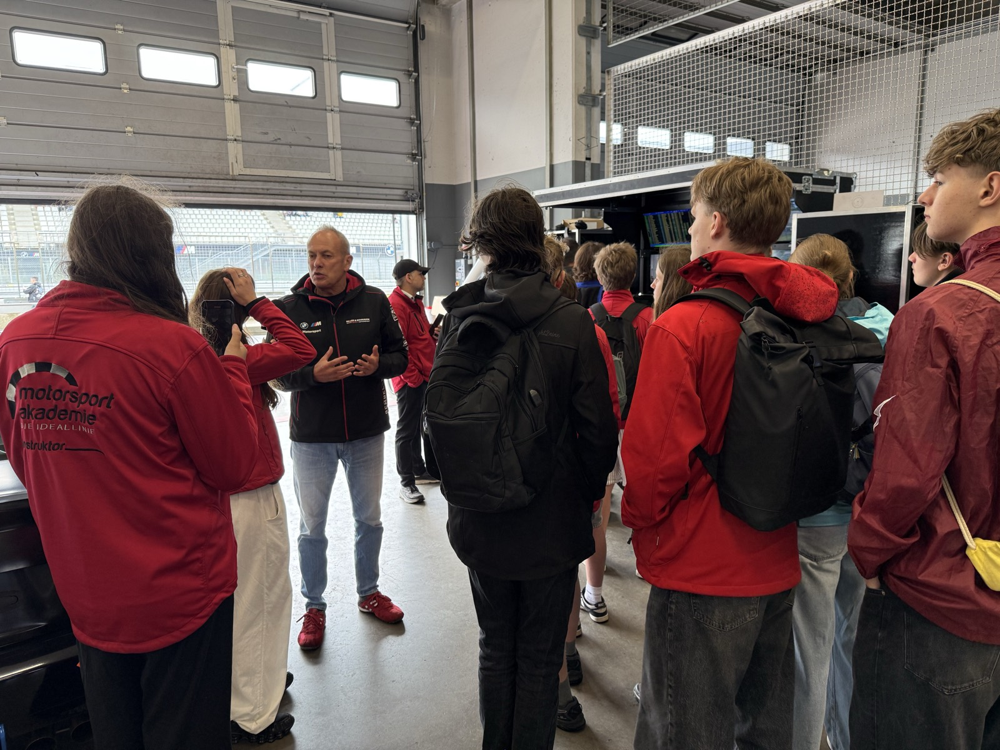

2CV 24h Spa: Fahrerplätze
Wir bereiten unseren Citroën C1 für das 24-Stunden-Rennen in Spa-Francorchamps vor. Du möchtest mit Scuderia Bambini an den Start gehen oder unseren Einsatz als Partner unterstützen?

Mitfahren in Spa
Eine gültige DMSB National-A-Lizenz ist ausreichend. Verfügbarkeit, Konditionen und Ablauf besprechen wir persönlich mit dir. Es gelten die Teilnahmebedingungen des Veranstalters.
Partner für 24 Stunden Racing
Für den Umbau und den Renneinsatz suchen wir Geld-, Sach- und Dienstleistungspartner. Werbeflächen und begleitende Inhalte vereinbaren wir individuell.
Drei Säulen, ein Team
Scuderia Bambini ist ein eigenständiges Motorsport-Projekt aus Köln. Unsere Motorsport-AG wird an der fns:köln angeboten. Jugendliche arbeiten am Fahrzeug, lernen technische Zusammenhänge kennen und übernehmen Aufgaben im Team.
„Ein Rennwagen fährt nur, wenn alle zusammenarbeiten."

Echtes Racing. Echte Strecke.
Unsere Kids werden Teil des Boxenteams — und fahren das eine oder andere Rennen selbst.
PTC Racing Cup
Identische Autos (Peugeot 107 / Toyota Aygo / Citroën C1) — faire Chancen, das Können entscheidet. Strecken wie Assen, Zandvoort & Meppen.
Auto-Slalom
Präzision, Ideallinie und Fahrzeugbeherrschung auf abgesperrten Flächen — der perfekte Einstieg in den Rennsport.
Werde Rennfahrer:in
Für unsere Fahrerplätze beim 2CV-24h-Rennen in Spa ist eine gültige DMSB National-A-Lizenz ausreichend. Die Teilnahme richtet sich nach der Ausschreibung des Veranstalters.
Im Nachwuchsprojekt begleiten wir Jugendliche auf dem Weg zur eigenen Rennlizenz. Erwerb, Mindestalter und Einsatzmöglichkeiten richten sich nach den DMSB-Bestimmungen und dem jeweiligen Wettbewerbsreglement.
- Grundwissen Sicherheit & Verhalten auf der Strecke
- Fahrtraining mit lizenziertem Instruktor
- Der erste echte Schritt in die Motorsport-Karriere
MINT zum Anfassen
Vom Schrauben bis zur Datenanalyse: Motorsport öffnet Türen zu echten Berufsfeldern.
Schon vorhanden:

Unser Weg nach Spa
Unser Weg vom Klassenzimmer Richtung Rennstrecke — Schritt für Schritt.
-
Der Start
Das Team formiert sich
Sechs engagierte Jugendliche starten Scuderia Bambini — praxisnaher Motorsport statt reiner Theorie.
-
Die Basis
Werkstatt & Simulator eingerichtet
Fanatec-Simulator, zwei Hebebühnen und eine voll ausgestattete Werkstatt — die Grundlage steht.
-
Unser Rennwagen
Citroën C1 im SCB-Design
Unser eigenes Fahrzeug ist da — foliert in Gold & Schwarz.
-
Rein ins Fahrerlager
Zu Gast bei der Motorsportakademie
Echte Rennabläufe hautnah: Fahrerlager, Boxenteam und Technik direkt an der Strecke erlebt.

-
Praxis pur
Werkstatt-Einblicke & Technik
Schrauben, verstehen, anpacken: Die Jugendlichen lernen Fahrzeugtechnik direkt am Objekt.

-
23.–25. Oktober 2026
Nächster Einsatz: 2CV 24h Spa
Unser Citroën C1 wird für den 24-Stunden-Einsatz vorbereitet. Wir bieten Fahrerplätze an und suchen Partner für Umbau und Rennen. Mit einer gültigen National-A-Lizenz kannst du einen Fahrerplatz anfragen.
Aus Boxengasse & Fahrerlager
Unser C1 auf der Strecke, Teamarbeit im Fahrerlager und Technik in der Werkstatt. Öffne ein Bild für die Großansicht.



Giuseppe Turco
Gründer von Scuderia Bambini · Rennfahrer · Mentor
Mein Weg führte mich früh in die Selbstständigkeit. Als Geschäftsführer einer GmbH habe ich gelernt, Verantwortung zu tragen, Teams zu führen und unternehmerisch zu denken. Heute führe ich mehrere eigene Unternehmen, unter anderem in den Bereichen Handwerksdienstleistungen und Social-Media-Marketing. Diese Mischung aus praktischem Handwerk und moderner Kommunikation prägt bis heute meine Arbeitsweise: anpacken, gestalten, vermitteln.
Der Motorsport begleitet mich, seit ich denken kann. Mein Vater hat die Begeisterung in mir geweckt, später teilte ich sie mit Freunden – damals noch ausschließlich vor dem Fernseher. Denn genau das ist die Realität für die meisten Motorsportbegeisterten: Die Welt der Rennstrecke wirkt unerreichbar, unübersichtlich und vor allem kostenintensiv. Bis ich eines Tages den richtigen Menschen kennenlernte und meine ersten eigenen Fahrten auf der Rennstrecke machen durfte. Ein Traum, den ich schon als Jugendlicher hatte, wurde Wirklichkeit.
Seit nunmehr vier Jahren bin ich aktiv im Motorsport zu Hause. Ich besitze eine eigene Rennlizenz sowie ein Permit für die Nürburgring-Nordschleife. An der Seite von Christopher Bartz (DMSB-Instruktor A) von der Motorsportakademie begleite ich seither dessen Lehrgänge und unterstütze Rookies auf ihrem Weg zur Rennlizenz – ich motiviere, begleite und helfe ihnen, sich stetig zu verbessern. Aktuell strebe ich selbst die Instruktor-Lizenz B an, die ich voraussichtlich im Februar 2027 erwerben werde.
„Was mir damals fehlte – ein Zugang, ein Mentor, eine Tür in diese Welt – möchte ich den Schülerinnen und Schülern öffnen. Motorsport soll erreichbar werden, verständlich und erlebbar."
Genau diese Erfahrung möchte ich mit dem Motorsport-Projekt an der fns:köln weitergeben. Durch meine starke Präsenz an der Schule und die Leitung der Social-Media-AG bringe ich bereits Erfahrung im Umgang mit Kindern und Jugendlichen mit und weiß, wie man junge Menschen für ein Thema begeistert.
Nachhaltigkeit ist für mich dabei kein Widerspruch, sondern Verpflichtung: Unsere schöne Erde soll noch lange, lange leben, und es ist unsere Pflicht, etwas dafür zu tun. Aber der Spaß darf dabei nicht verloren gehen – denn ein Leben ohne Freude ist nicht lebenswert. Genau diese Balance aus Verantwortung und Begeisterung möchte ich den Jugendlichen vermitteln.
Ich bin 27 Jahre alt, gebürtiger Kölner mit italienischen Wurzeln – und ich freue mich auf jeden jungen Menschen, der mit uns gemeinsam Fahrt aufnimmt.
Mit uns zu den 2CV 24h Spa
Unser nächstes Ziel: das Rennwochenende vom 23.–25.10.2026 in Spa-Francorchamps. Für den Umbau unseres Citroën C1 und den 24-Stunden-Einsatz suchen wir Partner — vom Unterstützer bis zum Hauptpartner. Umfang und Gegenleistungen stimmen wir persönlich ab.
Warum Partner werden?
- Umbau und Vorbereitung für ein konkretes 24-Stunden-Rennen unterstützen
- Werbeflächen am Fahrzeug und Präsenz in unseren Teammedien individuell vereinbaren
- Vorbereitung, Ausdauer und Teamarbeit als gemeinsame Geschichte erzählen
- Auch unser Nachwuchsprojekt mit Technik, Bildung und Motorsport begleiten
Supporter
- Sichtbarkeit in der Unterstützerübersicht
- Dankeschön in digitalen Beiträgen
Förderpartner
- Erweiterte Präsenz in Kommunikationsmaterialien
- Logo in ausgewählten Projektmedien
Teampartner
- Stärkere Sichtbarkeit im Umfeld des Projekts
- Einbindung in Inhalte und Auftritte
Hauptpartner
- Prominente Präsenz als zentraler Förderer
- Besondere Sichtbarkeit auf zentralen Projektflächen
Deine Anfrage für Spa
Du möchtest einen Fahrerplatz beim 2CV-24h-Rennen oder unseren Einsatz unterstützen? Schreib uns an info@scuderiabambini.de oder bereite hier deine E-Mail vor.